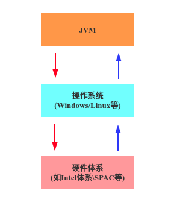
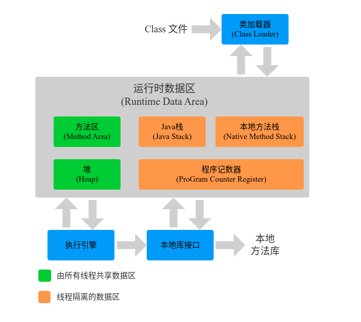
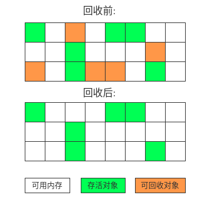
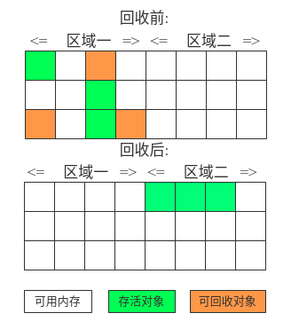
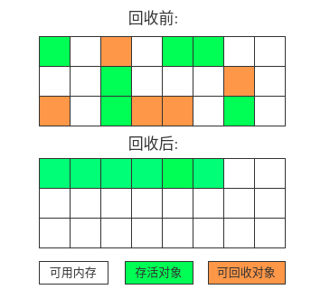

JVM

1. 简介:
JVM(Java Virtual Machine), Java 虚拟机. JVM 是一种用于计算机设备的规范, 它是一个虚拟出来的计算机, 是通过在实际计算机上仿真模拟各种计算机功能来实现的.
JVM 的位置:

2. JVM 运行时数据区

2.1 Java堆 (heap)
对大多数应用来说, Java堆 (heap) 是 Java虚拟机所管理的内存中最大的一块. Java 堆是被所有线程共享的一段内存区域, 在虚拟机启动时创建, 此内存区域的唯一作用就是存放对象实例, 几乎所有的对象实例都在这里分配内存.
Java堆是垃圾收集器 (GC) 管理的主要区域, 因此很多时候也被叫做 “GC堆”.
如果从内存回收的角度看, 由于现在的收集器基本都是采用的分代收集算法, 所以 Java堆 还可以细分为: 新生代和老年代, 新生代又可以细分为 Eden空间, From Survivor空间, To Survivor空间(8 : 1 : 1).
根据 Java 虚拟机规范的规定, Java堆可以出于物理上不连续的内存空间中, 只要逻辑上连续即可. 在实现时, 既可以实现成固定大小的, 又可以是可扩展的, 当前主流的虚拟机是按照可扩展来实现的.
如果在堆中没有内存完成实例分配, 并且堆也无法再扩展时, 将会抛出 OutOfMemoryError 异常。
可以通过以下的参数调整 Java堆的大小.
控制参数:
- -Xms设置堆的最小空间大小.
- -Xmx设置堆的最大空间大小.
- -XX:NewSize设置新生代最小空间大小.
- -XX:MaxNewSize设置新生代最大空间大小.
- -XX:PermSize设置永久代最小空间大小.
- -XX:MaxPermSize设置永久代最大空间大小.
- -Xss设置每个线程的堆栈大小.
永久代是 HotSpot虚拟机特有的概念, 在方法区的一种实现, 在 JDK8 中被完全废弃, 改用在本地内存中实现的元空间代替.
虽然没有直接设置老年代的参数, 但是可以通过设置堆空间大小和新生代空间大小两个参数来直接控制.
老年代空间大小 = 堆空间大小 - 新生代最大空间大小
2.2 方法区 (Method Area)
方法区 (Method Area) 和 Java堆 一样是各个线程共享的内存区域. 它用于存储已经被虚拟机加载的类信息, 常量, 静态变量, 即时编译器编译后的代码等数据.
Java虚拟机规范对这个区域的限制非常宽松, 出了和 Java堆一样不需要连续的内存空间和可以选择固定大小或者可扩展外, 还可以选择不实现垃圾收集. 相对而言, 垃圾收集行为在这个区域是比较少出现的, 这个区域的内存回收主要目标是针对常量池的回收和对类型的卸载.
根据Java虚拟机规范的规定, 当方法区无法满足内存分配需求时, 将抛出OutOfMemoryError异常.
2.3 程序计数器 (Program Counter Register)
程序计数器 (Program Counter Register) 是一块较小的内存空间, 可以看作当前线程所执行字节码的行号指示器, 字节码解释器工作时通过改变计数器的值选取下一条执行指令, 分支,循环, 跳转, 线程恢复等功能都需要依赖计数器完成, 是唯一在虚拟机规范中没有规定内存溢出情况的区域.
由于 Java虚拟机的多线程是通过线程轮流切换并分配处理器执行时间的方式实现的, 在任何一个确定的时间, 一个处理器 (对多核处理器来说是一个内核) 只会执行一条线程中的指令. 因此, 为了线程切换后能恢复到正确的执行位置, 每个线程都需要有一个独立的程序计数器, 各条线程之间的计数器互不影响, 独立存储, 我们称这种内存为 “线程私有” 的内存.
2.4 JVM栈 (JVM Stacks)
JVM栈 (JVM Stacks) 与程序计数器一样是 线程私有 的, 它的生命周期和线程相同, JVM 栈描述的是 Java 方法执行的内存模型: 每个方法被执行的时候都会创建一个栈帧 (Stack Frame) 用于存储方法的局部变量表, 操作栈, 动态链接, 方法出口等信息. 每一个方法被调用至执行完成的过程, 就对应着一个栈帧在虚拟机中从入栈到出栈的过程.
在 java虚拟机规范中, 对这个区域规定了两种异常: 如果线程请求的栈深度大于虚拟机所允许的深度, 将抛出 StackOverflowError 异常; 如果虚拟机栈可以动态扩展, 当扩展无法申请到足够的内存时会抛出 OutOfMemoryError 异常.
2.5 本地方法栈 (Native Method Stacks)
本地方法栈 (Native Method Stacks) 和虚拟机栈发挥的作用非常相似, 其区别不过是虚拟机栈为虚拟机执行 Java 方法 (字节码) 服务, 而本地方法栈则是为虚拟机使用 Native 方法服务. 虚拟机规范中对本地方法栈中方法的使用的语言, 使用方式和数据结构并没有强制规定, 因此具体的虚拟机可以自由实现它. 与虚拟机栈一样, 本地方法区域也会抛出 StackOverflowError 和 OutOfMemoryError 异常.
3. 垃圾收集
3.1 简介
垃圾收集 Garbage Collection 通常被称为 “GC”.
JVM中, 程序计数器, 虚拟机栈, 本地方法栈都是随线程而生随线程而灭, 栈帧随着方法的进入和退出做入栈和出栈操作, 实现了自动的内存清理, 因此, 我们的内存垃圾回收主要集中于 java 堆和方法区中, 在程序运行期间, 这部分内存的分配和使用都是动态的.
3.2 对象存活判断
判断对象是否存活有二种方式:
- 引用计数: 每个对象有一个引用计数属性, 新增一个引用时 + 1, 引用释放时 - 1, 计数为 0 可回收. 此方法实现简单, 但是无法解决循环引用问题.
- 可达性分析: 从 GC Roots 开始向下搜索, 搜索走过的路径称为引用链. 当一个对象到 GC Roots 没有任何引用链相连时, 则会被表为垃圾.
可作为 GC Roots 的对象:
- 虚拟机栈和本地方法栈中引用的对象
- 方法区中类静态属性引用的对象
- 方法区中常量引用的对象
引用类型:
强引用: 最常见的引用, 例如 Object object = new Object() 就属于强引用. 只要对象有强引用指向且 GC Roots 可达, 在内存回收时即使濒临内存耗尽也不会被回收.
软引用: 弱于强引用, 描述非必需对象. 在系统将发生内存溢出前, 会把软引用关联的对象加入回收范围以获取更多的空间. 常用来缓存服务器中间计算结果及不需要实时保存的用户行为.
弱引用: 弱于软引用, 描述非必需对象. 弱引用关联的对象只能生存到下次 YGC(对新生代进行 GC) 前, 当垃圾收集器开始工作时无论当前内存是否足够都会回收被弱引用关联的对象. 由于 YGC 具有不确定性, 因此弱引用何时被回收也不能确定.
虚引用: 最弱的引用, 定义完成后无法通过该引用获取对象. 唯一目的就是为了在对象被回收时收到一个通知. 虚引用必须与引用队列联合使用, 垃圾回收时如果出现虚引用, 就会在回收对象前把这个虚引用加入引用队列.
3.2 GC 算法
3.2.1 标记 - 清除算法
“标记 - 清除” (Mark - Sweep)算法, 如它的名字一样, 算法分为 “标记” 和 “清除” 二个阶段: 首先标记出所有要被回收的对象, 在标记完成后统一回收所有被标记的对象.
标记 - 清除是最基础的 GC 算法, 后续的收集算法都是基于这种思路并对其缺点进行改进而得到的.

缺点:
- 标记和清除的效率都不高.
- 标记 - 清除之后会产生大量的不连续的内存碎片, 空间碎片太多可能会导致: 当程序运行过程中无法分配一个较大的空间而提前触发 GC.
3.2.2 复制算法
为了解决内存碎片化问题, 将可用的内存分为大小相等的两块, 每次只用其中一块. 当这一块内存用完了, 就将还存活的对象复制到另一块上, 再把已使用过的内存空间一次清理掉.
缺点:
- 浪费了一半的内存空间.

3.2.3 标记 - 整理算法
标记 - 整理算法: 与标 - 清除算法类似, 只不过标记后不是直接对可回收的对象进行清理, 而是让所有存活的对象向一端移动, 然后清理掉端边界以外的内存.

缺点:
- 移动活对象, 尤其是在老年代这种都有大量对象存活的区域, 是一种极为负重的操作, 而且移动必须全程暂停用户线程.
3.3 垃圾收集器
3.3.1 Serial收集器
最基础,最稳定以及效率高的收集器, 单线程工作, 只用一条 GC 线程进行垃圾回收, 进行垃圾收集必须停止一切用户线程(Stop The World).
简单高效, 对于内存受限的环境它是所有收集器中额外内存消耗最小的, 对于处理器核心较少的环境, Serial 由于没有线程交互开销, 可获得最高的单线程收集效率.
适合客户端使用.
3.3.2 ParNew 收集器
ParNew收集器其实就是Serial收集器的多线程版本. 清理过程需要 Stop The World.
ParNew 追求”低停顿时间”, 与 Serial 唯一的区别就是使用了多线程进行垃圾收集, 在多 CPU 环境下性能比 Serial 会有一定的提升; 但线程切换需要额外开销, 因此在单 CPU 环境下表现不如 Serial.
3.3.3 Parallel 收集器
Parallel Scavenge收集器类似ParNew收集器, Parallel收集器更关注系统的吞吐量, 吞吐量就是处理器用于运行用户代码的时间与处理器消耗总时间的比值.
3.3.4 Serial Old 垃圾收集器
Serial 的老年代版本, 都是单线程收集器, 只启用一条 GC 线程.
和 Serial 的区别: Serial Old 工作在老年代, 使用 “标记-整理”算法; Serial 工作在新生代, 使用复制算法.
3.3.5 Parallel Old 收集器
Parallel Old是Parallel Scavenge收集器的老年代版本, 使用多线程和”标记-整理” 算法, 在 JDK 1.6 提供.
3.3.6 CMS 收集器
CMS(Concurrent Mark Sweep)收集器,以获取最短回收停顿时间为目标, 基于标记-清除算法, 过程相对复杂, 分为四个步骤:
- 初始标记: Stop The World, 仅使用一条初始标记线程对所有与 GC Roots 直接关联的对象进行标记.
- 并发标记: 使用多条标记线程, 与用户线程并发执行. 此过程进行可达性分析, 标记出所有废弃对象, 速度很慢.
- 重新标记: Stop The World, 使用多条标记线程并发执行, 将并发标记期间出现的废弃对象标记出来.
- 并发清除: 只使用一条 GC 线程, 与用户线程并发执行, 清除标记的对象. 这个过程非常耗时.
优点: 并发收集, 低停顿
缺点:
- 并发阶段会降低吞吐量
- 无法处理浮动垃圾, 导致频繁 Full GC
- 产生空间碎片
3.3.7 G1 收集器
G1 是一款面向服务端应用的垃圾收集器, 它没有新生代和老年代的概念, 而是将堆划分为一块块独立的 Region. 当要进行垃圾收集时, 首先计算每个 Region 中垃圾的数量, 每次都从垃圾回收价值最大的 Region 开始回收, 因此可以获得最大的回收效率.
从整体上看, G1 是基于”标记-整理”算法实现的收集器, 从局部 (两个 Region 之间) 上看是基于”复制”算法实现的, 这意味着运行期间不会产生内存碎片.
每个 Region 中都有一个 Remembered Set, 用于记录本区域中所有对象的引用所在的区域, 进行可达性分析时, 只要在 GC Roots 中再加上 Remembered Set 即可防止对整个堆内存进行遍历.
如果不计算维护 Remembered Set 的操作, G1 收集器的工作过程可以分为一下几个步骤:
- 初始标记: Stop The World, 仅使用一条初始标记线程对所有与 GC Roots 直接关联的对象进行标记.
- 并发标记: 使用一条标记线程, 与用户线程并发执行. 此过程进行可达性分析, 标记出所有废弃对象, 速度很慢.
- 最终标记: Stop The world, 使用多条线程并发执行.
- 筛选回收: 回收废弃对象, 此时也要 Stop The world, 并使用多条筛选回收线程并发执行.
4. 内存分配与回收策略
对象只要分配在新生代的 Eden 区域, 少数情况下可能直接分配在老年代, 分配规则不固定, 取决于当前使用的垃圾收集器组合以及相关的参数配置.
4.1 对象优先在 Eden 分配
大多数情况下, 对象在新生代 Eden 区中分配, 当 Eden 没有足够的内存空间进行分配时, 虚拟机将发起一次 Minor GC.
Minor GC 和 Major GC/Full GC:
- Minor GC: 回收新生代 (包括 Eden 和 Survivor 区域), 因为 Java 对象大多都具备朝生息灭的特性, 所以 Minor GC 非常频繁, 一般回收速度也比较快.
- Major GC/Full GC: 回收老年代, 出现了 Major GC 经常会伴随着至少一次的 Minor GC, 但非绝对. Major GC 的速度一般会比 Minor GC 慢 10 倍以上.
在 JVM 规范中, Major GC 和 Full GC 没有正式的定义, 所以有人也简单的认为 Major GC 清理老年代, Full GC 清理整个内存堆.
4.2 大对象直接进入老年代
大对象是指需要大量连续内存空间的 Java 对象, 如很长的字符串或数据.
出现大对象会导致内存还有不少空间就提前触发垃圾收集以获取足够的连续空间来”放置”它们.
虚拟机提供了一个 -XX:PretenureSizeThreshold 参数, 使大于设置值的对象直接在老年代分配, 避免在 Eden 以及两个 Survivor 区之间发生大量的内存复制.
4.3 长期存活的对象进入老年代
JVM 给每个对象定义了一个对象年龄计数器, 新生代发生 Minor GC 后, 存活下来的对象年龄 + 1, 当年龄超过一定值时, 就将该对象移入老年代.
使用 -XX:MaxTenuringThreshold 设置新生代的最大年龄, 只要超过该参数的新生代对象都会被转移到老年代中去.
4.4 动态对象年龄判定
如果当新生代的 Survivor 中, 相同年龄的所有对象大小的总和大于 Survivor 空间的一半, 年龄大于等于该年龄的对象就可以直接进入老年代, 无序等到 MaxTenuringThreshold 中要求的值.
注意: 计算的年龄是累计和.
例如:
年龄 1 的对象占 33%
年龄 2 的对象占 33%
年龄 3 的对象占 34%
年龄 1 + 年龄 2 = 33% + 33% = 66% > 50% 所以年龄大于等于 2 的对象都会进入老年代.
4.5 空间分配担保
只要老年代的连续空间大于新生代对象总大小或者历届晋升的平均大小, 就会进行 Minor GC, 否则进行 Full GC.
通过清理老年代中废弃数据来扩大老年代空间, 以便给新生代作担保. 这个过程就是分配担保.
4.6 触发 Full GC 的情况
调用 System.gc() 方法
此方法的调用是建议 JVM 进行 Full GC, 只是建议并非一定.
老年代空间不足
老年代空间不足时会触发 Full GC, 若 Full GC 后空间依然不足, 会抛出:
java.lang.OutOfMemoryError: Java heap space.永久代空间不足
JVM 规范中运行时数据区域中的方法区, 在 HotSpot 虚拟机中也被称为永久代, 存放一下类信息, 常量, 静态变量等数据, 当系统要加载的类, 反射的类, 和调用的方法比较多使, 永久代可能会被占满, 会触发 Full GC. 如果经过 Full GC 空间依然不足, 会抛出:
java.lang.OutOfMemoryError: PermGen spaceCMS GC 时出现 promotion failed 和 concurrent mode failure
promotion failed, 就是上文所说的担保失败, 而 concurrent mode failure 是执行 CMS GC 的过程中同时有对象要放入老年代, 而此时老年代空间不足造成的.
统计得到的 Minor GC 晋升到旧生代的平均大小大于老年代的剩余空间